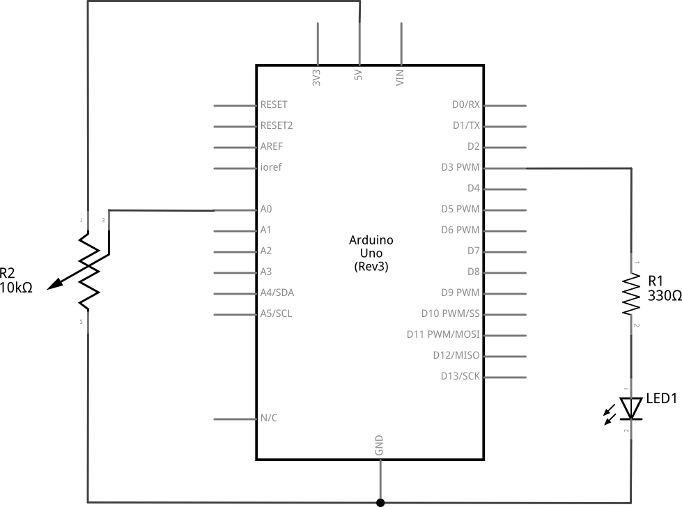
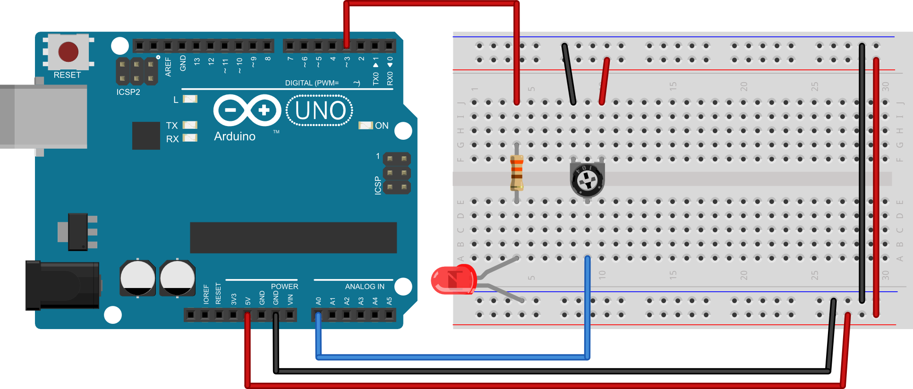

Poglavlje 8
Zadatak 38
Na analogni izvod mikrokontrolera spojite srednji izvod potenciometra, a na izvod mikrokontrolera s mogućnošću pulsno-širinske modulacije spojite jednu svjetleću diodu. Napišite program koji će mijenjati jačinu svjetlosti svjetleće diode u ovisnosti o stanju analognog ulaza na kojem je spojen potenciometar. Kada je na analognom ulazu stanje 0 neka svjetleća dioda bude ugašena, a kada je na ulazu stanje 1023 neka svjetleća dioda svijetli punim sjajem. Na računalo putem serijske veze pošaljite očitanje analognog ulaza i podešenu širinu pulsa za svjetleću diodu.
SHEMA:

EKSPERIMENTALNA PLOČICA:

RJEŠENJE:
int led = 3; //definiraj led = 3 int fo = A0; //definiraj fo = A0 int ocitanjepot; //definiraj varijablu ocitanjefo int jacinaled; //definiraj varijablu jacinaled void setup() { pinMode(led, OUTPUT); //postavi izvod led kao izlazni digitalWrite(led, LOW); //isključi LED diodu - početno stanje Serial.begin(9600); //inicijalizaija serijske veze } void loop() { ocitanjepot=analogRead(fo); //očitaj stanje analognog ulaza jacinaled=map(ocitanjepot, 0, 1023, 0, 255); //skaliraj očitanu vrijednost na 0-255 analogWrite(led, jacinaled); //postavi jačinu LED diode Serial.print(ocitanjepot); //pošalji očitanje serijskim putem Serial.print("\t"); //pošalji znak tablulator serijskim putem Serial.println(jacinaled); //pošalji jačinu LED serijskim putem delay(50); //čekaj 50 ms }